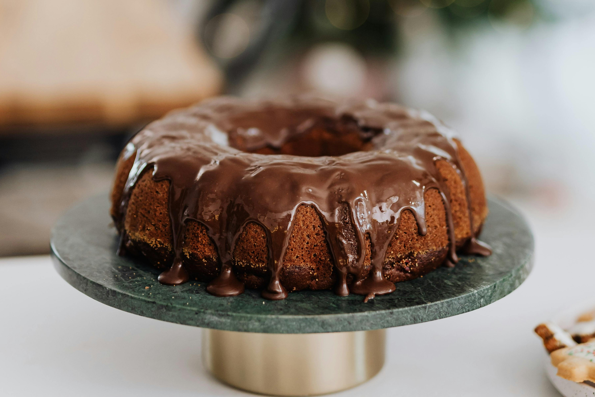

Bolo de Chocolate
Descrição:
Um bolo de chocolate fofinho, úmido e fácil de fazer. Perfeito para o café da tarde ou ocasiões especiais.
Ingredientes:
Para a Massa:
- 2 xícaras (chá) de farinha de trigo
- 1 e 1/2 xícara (chá) de açúcar
- 1 xícara (chá) de chocolate em pó (ou cacau 50%)
- 1 colher (sopa) de fermento em pó
- 3 ovos
- 1/2 xícara (chá) de óleo
- 1 xícara (chá) de leite morno
Para a Cobertura:
- 1/2 xícara (chá) de leite
- 1 colher (sopa) de manteiga
- 4 colheres (sopa) de chocolate em pó
- 4 colheres (sopa) de açúcar
Modo de Preparo:
Massa:
- Preaqueça o forno a 180°C.
- Em uma tigela grande, misture os ingredientes secos: farinha, açúcar, chocolate em pó, fermento e sal.
- Acrescente os ovos, o óleo e o leite morno. Misture bem até obter uma massa homogênea.
- Despeje a massa em uma forma untada e enfarinhada.
- Leve ao forno por cerca de 35 a 40 minutos ou até que, ao enfiar um palito, ele saia limpo.
Cobertura:
- Em uma panela, misture todos os ingredientes da cobertura.
- Leve ao fogo médio, mexendo sempre, até ferver e engrossar levemente.
- Despeje sobre o bolo ainda quente.
Rendimento:
Serve: 10 a 12 porções
Tempo de Preparo
Tempo total: 50 minutos
Preparo: 15 minutos
Cozimento: 35 minutos